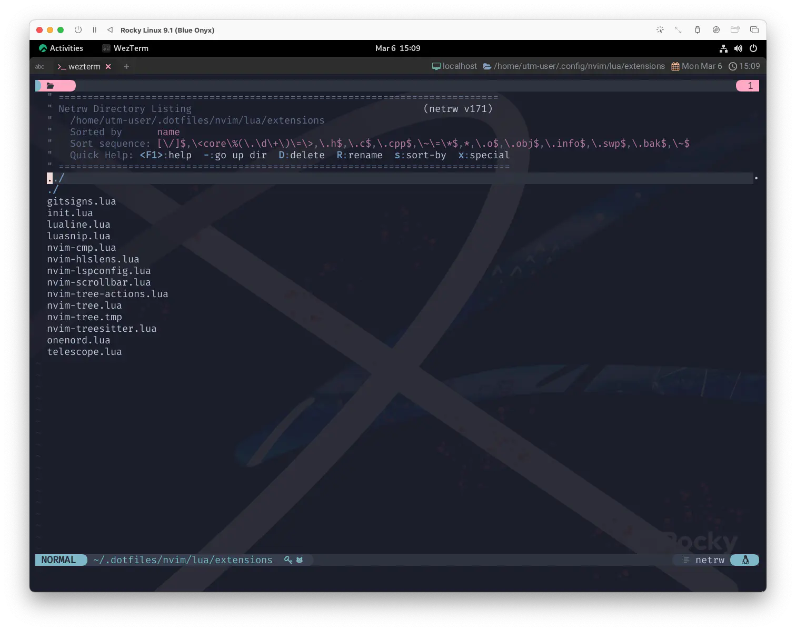
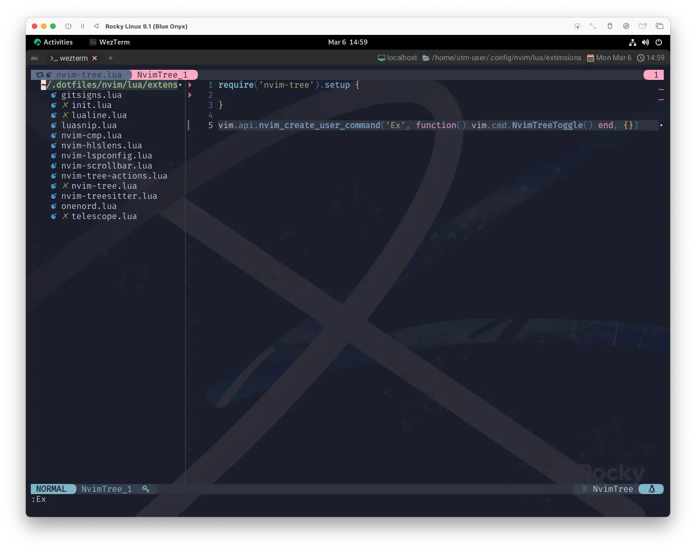
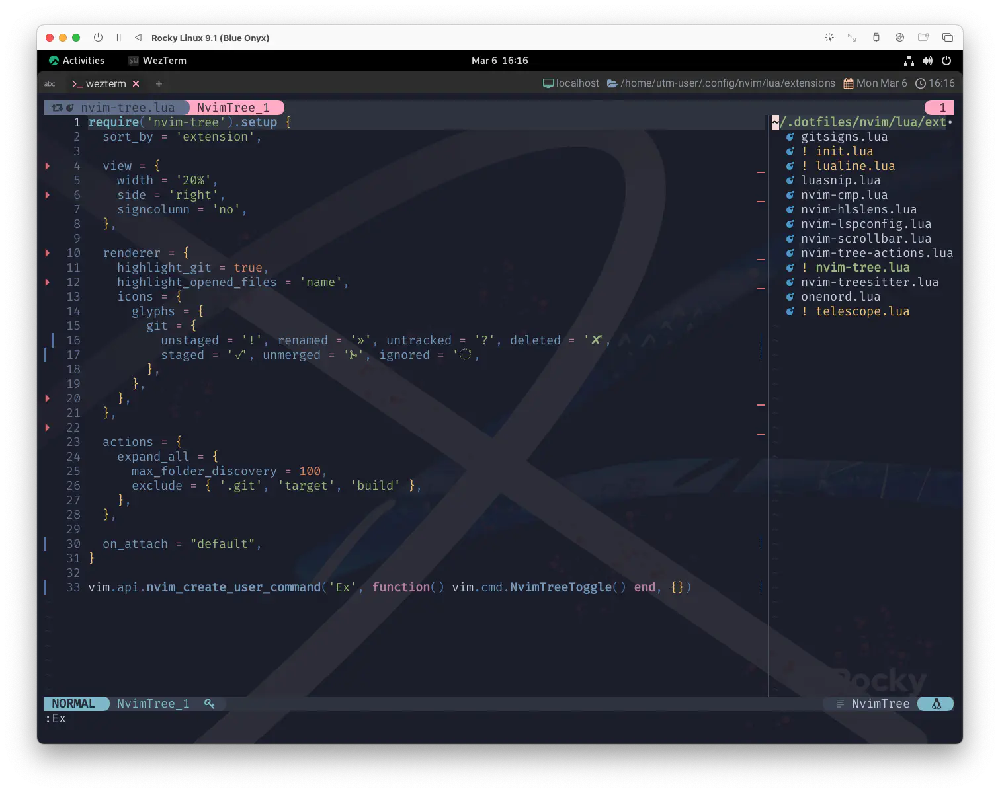

nvim-tree.lua
今回はnvim-tree.luaです。これもうまく活用できれば満足度は高いはずです☺️
A File Explorer For Neovim Written In Lua
これもまた、びっくりしちゃうほど機能満載でボリュームのあるプラグインなので、上下巻でお送りします✨
飛行機が着地を完了すると禁煙のサインが消え、天井のスピーカーから小さな音でBGMが流れはじめた。
それはどこかのオーケストラが甘く演奏するビートルズの「ノルウェイの森」だった。
そしてそのメロディーはいつものように僕を混乱させた。
She showed me her room
Isn’t it good Norwegian wood?
僕は彼女の部屋に招かれた
いいじゃない？ ノルウェーの木かな
"Beatle Mania" や "Harukists" であれば「"Drive My Car"の次やから、どうせこんなん繋いでくんねやろー」なんて、容易く想像できましたね❗
世間はと言えば、先日ついにタイトルが発表された、同じく村上春樹著の「街とその不確かな壁 (The City and Its Uncertain Walls) 2 」の話題で持ちきりですが、なんかもう逆に街から離れて森の中へ足を踏み入れていきます... 🌲
Requirements
neovim >=0.8.0
nvim-web-devicons is optional and used to display file icons.
nvim-web-devicons はオプションで、ファイルアイコンを表示するために使用します。
It requires a patched font. Your terminal emulator must be configured to use that font, usually "Hack Nerd Font"
パッチを当てたフォント が必要です。 ターミナルエミュレータで "Hack Nerd Font" を使うように設定されている必要があります。
ここまでの積み重ねがあれば、もうこんなの何も気にせず進めますね😤
フォントに関しては「Hack Nerd Fontでなければダメ」みたいにも読めますが、単にNerd Fontを含んだフォントセットを使用していればへーきです。
これはターミナルのお話なので、もしWezTermを使用しているのであれば以下の内容で通じます😉
これはもう、ほんとに好きなフォントでいいです。
...というか、WezTermであれば、極論何もする必要がありませんね😮
First Of All
nvim-tree.luaのインストールより先にやっておきたいことがあって、それがnetrwの無効化です。
netrw
netrwは Vim及びNeovimがデフォルトで持っている機能です。

コマンド:Exで呼び出せます。
この機能については、わたしもそこまで詳しくないのであまり説明できませんが、
ぶっちゃけて言えば、nvim-tree.luaと "もろ被り" な機能です❗
pi_netrw.txt For Vim version 8.2. Last change: 2020 Aug 15
------------------------------------------------
NETRW REFERENCE MANUAL by Charles E. Campbell
------------------------------------------------
Author: Charles E. Campbell <NcampObell@SdrPchip.AorgM-NOSPAM>
(remove NOSPAM from Campbell's email first)
Copyright: Copyright (C) 2017 Charles E Campbell netrw-copyright
...いや nvim-tree.luaがnetrwにもろ被せに行ったと言うべきか🤔
まあ、どっちにしろ機能が重複しちゃうので「どっちかにしましょ」と言うことですね😆
以下のコードによって、netrwを無効化できます。
vim.api.nvim_set_var('loaded_netrw', 1)
vim.api.nvim_set_var('loaded_netrwPlugin', 1)
これを行うのは、nvim-tree.luaがオフィシャルに
disable netrw at the very start of your init.lua (strongly advised)
init.luaの最初の部分でnetrwを無効にする (強く推奨)
...と、何やら力強く推奨しているためです。
わたしが普段使用している環境ではextensions/nvim-tree.luaの先頭に置いています。
これは、nvim-treeの使用をやめた際に「netrwの "無効化を無効化" できる」という利便性を得るためですが、
本当にこれで問題が無いのかどうかは、ちょっと不確かな壁です😅
なので、このサイトでは素直にnvimディレクトリ直下のinit.luaの最初の部分に置くことをオススメしていきます❗
この節で唐突に Captain Marvel 3 が登場してきましたね✨
ここで出番があるなんて、わたしもうっかりさんでした❗
Install & Settings
それでは、インストールに進みましょう。今回は先にデフォルトで動かしてみることにします。
まずは、これを忘れずにね😉
で、いつものパターン。
require('nvim-tree').setup {
-- まずはからっぽ〜
}
vim.api.nvim_create_user_command('Ex', function() vim.cmd.NvimTreeToggle() end, {})
use {
'nvim-tree/nvim-tree.lua',
config = function() require 'extensions.nvim-tree' end,
requires = 'nvim-tree/nvim-web-devicons',
}
そしたら、コマンド:Exを実行してみましょう。

うん、出ましたね☺️
繰り返しになりますが、Exコマンドは本来netrwのコマンドです。
なんですが❗ 無効化したので乗っ取ってやろうっていう魂胆ですね😼
ここで不意を突いて現れたnvim_create_user_commandについては14.4節にて、実はしれっと触れてました😆
もう一個だけやっておきたいのは、独自コマンドからプラグインを使うパターンです。
なんと今回、帰ってくるのは Captain Marvel だけではなかったのです❗おかえり🤗
再会に水を差すようですが、わざわざコマンド打つのはめんどくさいよーって場合はいつも通りキーマップを使うことも、もちろん可能です。
vim.keymap.set('n', '<leader>ex', vim.cmd.NvimTreeToggle)
...みたいな❓
なんだったら別に両方入れちゃってもいいし 🦆🦆
上の例ではNvimTreeToggleだけを使用していますが、NvimTreeの開き方 (と、閉じ方) はいくつかあります😌
3. COMMANDS *nvim-tree-commands*
:NvimTreeOpen
opens the tree. Takes an optional path argument.
ツリーを開く。オプションのpath引数を取ります。
:NvimTreeClose
closes the tree
ツリーを閉じます。
:NvimTreeToggle
open or close the tree. Takes an optional path argument.
ツリーを開く、または閉じます。オプションのpath引数を取ります。
:NvimTreeFocus
open the tree if it is closed, and then focus on the tree
ツリーが閉じている場合は開き、ツリーにフォーカスします。
もしもう少し細かく制御したいと思ったら、この辺りを使用すれば良いはずです😉
そりゃそうだと言われてしまいそうですが、閉じるときは:qや:bdなんかでもいけます。
Customize
ってことで❗
ある程度雰囲気がわかったら、ここからカスタマイズしてみましょう。
require('nvim-tree').setup {
sort_by = 'extension',
view = {
width = '20%',
side = 'right',
signcolumn = 'no',
},
renderer = {
highlight_git = true,
highlight_opened_files = 'name',
icons = {
glyphs = {
git = {
unstaged = '!', renamed = '»', untracked = '?', deleted = '✘',
staged = '✓', unmerged = '', ignored = '◌',
},
},
},
},
actions = {
expand_all = {
max_folder_discovery = 100,
exclude = { '.git', 'target', 'build' },
},
},
on_attach = 'default'
}
vim.api.nvim_create_user_command('Ex', function() vim.cmd.NvimTreeToggle() end, {})
...ってやってみたら、こんな感じになりますよね🧐 
いくつかはデフォルト設定のままだったり、記述を省いている項目も (あり得ないほど) たくさんあります。
これもやっぱり毎回同じ文言になっちゃうんですが... ぜひ色々試してみてください😆
setup
You must run setup() function to initialise nvim-tree.
nvim-tree を初期化するには、setup() 関数を実行する必要があります。
:h nvim-tree-setupを見てもらえれば分かる通り、
これらを全部ここに載せてるとほんとに何ヶ月かかるか分かりません...。
なので、ちょこちょことわたしが使用しているパラメータ "だけ" フワ〜っと触れます。 と言っても、これもやっぱりある程度はパラメータの名前からイメージできるはずです😆
sort_by
Changes how files within the same directory are sorted.
Can be one of `name`, `case_sensitive`, `modification_time`, `extension` or a function.
同じディレクトリにあるファイルのソート方法を変更します。
`name`, `case_sensitive`, `modification_time`, `extension` あるいは関数のいずれかを指定することができます。
Type: `string` | `function(nodes)`, Default: `"name"`
Function is passed a table of nodes to be sorted, each node containing:
- `absolute_path`: `string`
- `executable`: `boolean`
- `extension`: `string`
- `link_to`: `string`
- `name`: `string`
- `type`: `"directory"` | `"file"` | `"link"`
Example: sort by name length:
local sort_by = function(nodes)
table.sort(nodes, function(a, b)
return #a.name < #b.name
end)
end
うん、もうそのままですね❗デフォルトは名前順ですが、わたしは種別順派です😤
Example として示されているようなfunctionを使えば、オリジナルのソート順にすることもできます🐥
view
Window / buffer setup.
ウィンドウ / バッファの設定。
width
nvim-tree.view.width
Width of the window: can be a `%` string, a number representing columns, a
function or a table.
A table indicates that the view should be dynamically sized based on the
ウィンドウの幅：`%`の文字列、列を表す数値、ウィンドウの幅を表す数値が指定できます。
関数またはテーブルを使用します。
表は、ビューの大きさを動的に調整することを示します。
longest line (previously `view.adaptive_size`).
Type: `string | number | function | table`, Default: `30`
説明不要ですね😉
side
nvim-tree.view.side
Side of the tree, can be "left", "right".
tree をどちら側に表示するか。"left"、"right" のいずれかを指定することができます。
Type: string, Default: "left"
わたしはright派ですね。当然ながらleftだとぺこぱこするので❗
signcolumn
nvim-tree.view.signcolumn
Show diagnostic sign column. Value can be "yes", "auto", "no".
診断記号列を表示します。値は "yes", "auto", "no" のいずれかです。
Type: string, Default: "yes"
多分LSPとかlint関連の表示だと思うんですが、
これについては他の領域やプラグインの機能を使用して表示していることもあって、わたしはnoで常用してます。
renderer
UI rendering setup
UI レンダリングの設定
highlight_git
nvim-tree.renderer.highlight_git
Enable file highlight for git attributes using `NvimTreeGit*` highlight groups.
Requires |nvim-tree.git.enable|
This can be used with or without the icons.
`NvimTreeGit*` ハイライトグループを使用した git 属性のファイルハイライトを有効にします。
|nvim-tree.git.enable| が必要です。
アイコンの有無にかかわらず使用可能です。
Type: `boolean`, Default: `false`
診断記号列とは逆に、git情報はある程度目立たせておいた方が安心かなーって思ってるので有効にしてます。❗
highlight_opened_files
nvim-tree.renderer.highlight_opened_files
Highlight icons and/or names for opened files using the
`NvimTreeOpenedFile` highlight group.
Value can be `"none"`, `"icon"`, `"name"` or `"all"`.
NvimTreeOpenedFile` ハイライトグループを使用して、
開いたファイルのアイコンや名前をハイライトします。
値は `"none"`, `"icon"`, `"name"` または `"all"` です。
Type: `string`, Default: `"none"`
説明のままですが、現在開かれているファイルをハイライトして区別できます 🐵
icons
Configuration options for icons.
アイコンの設定オプション。
glyphs
Configuration options for icon glyphs.
アイコングリフの設定オプションです。
NOTE: Do not set any glyphs to more than two characters if it's going
to appear in the signcolumn.
サインカラムに表示される場合は、グリフを 2文字以上に設定しないでください。
git
nvim-tree.renderer.icons.glyphs.git
Glyphs for git status.
git のステータスを表すグリフです。
Type: `table`, Default:
`{`
`unstaged = "✗",`
`staged = "✓",`
`unmerged = "",`
`renamed = "➜",`
`untracked = "★",`
`deleted = "",`
`ignored = "◌",`
`}`
だいぶ以前に「なんで "決定" が [×ボタン] なんだー⁉️ 」とかいうゲームコントローラーの話題があって、
これと似てる気がするんですが、どうしてもunsgatedが✗って慣れない...。deletedじゃないの❓それ😮
あとuntracked⭐😋
わたしの感覚が「古い」とか「ズレてる」ってだけかもしれないんですけどね❗
actions
Configuration for various actions.
様々なアクションを行うための設定。
expand_all
max_folder_discovery
Limit the number of folders being explored when expanding every folders.
Avoids hanging neovim when running this action on very large folders.
すべてのフォルダーを展開する際に、探索されるフォルダーの数を制限します。
非常に大きなフォルダーに対してこのアクションを実行したときに、neovim がハングアップするのを防ぎます。
Type: `number`, Default: `300`
デフォルトは300ですが、わたしは100の弱気設定です 🐥
exclude
A list of directories that should not be expanded automatically.
自動的に展開されないようにするディレクトリのリストです。
E.g `{ ".git", "target", "build" }` etc.
Type: `table`, Default: `{}`
わたしの例では、デフォルト設定そのままで特に困っていないのですが、 人によってはきっちり決めておきたい項目ではないでしょうか。
on_attach
Runs when creating the nvim-tree buffer. Use this to set your nvim-tree
specific mappings. See |nvim-tree-mappings|.
When on_attach is not a function, |nvim-tree-mappings-default| will be called.
nvim-tree バッファを作成するときに実行されます。これを使用して、nvim-tree 固有のマッピングを設定します。
特有のマッピングを設定するために使用します。nvim-tree-mappings を参照してください。
on_attachが関数でない場合、nvim-tree-mappings-default が呼び出されます。
Type: `function(bufnr) | string`, Default: `"default"`
既にお気付きかもしれませんが、つい最近nvim-tree.luaで使用するキーマッピングの設定方法に変更が入りました。
:help nvim-tree.view.mappings have been deprecated in favour of :help nvim-tree.on_attach. Please visit Migrating To on_attach to transition.
わたしがこのページを書き出したタイミング良く重なったため、こっちの新しい方法で紹介します😉
...ただ、なんか長くなってきちゃったので、例によってここで一旦区切ります。
「あなたまさか直子のこと忘れちゃったんじゃないでしょうね？」
「忘れやしませんよ」と笑って言った。「ただ話に引き込まれてたんです」
「もし話のつづき聞きたいんなら明日話してあげるわよ。長い話だから一度には話せないのよ」
「まるでシエラザードですね」
「うん、東京に戻れなくなっちゃうわよ」と言ってレイコさんも笑った。
To Be Concluded...
We talked until two
And then she said, "It's time for bed"
２時まで話し込んでしまった
"もう寝る時間よ" と彼女は言った
3: このサイトでは、nvim_set_varをなんかたまに Captain Marvel と呼称することがあるんですよねー。